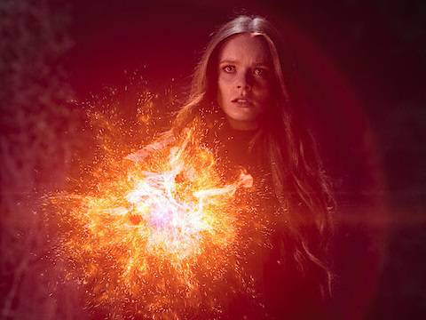

Fate: A Saga Winx encontra meio-termo perfeito entre ridículo e envolvente
Havia algo de frustrante na primeira temporada de Fate: A Saga Winx, a contida adaptação em live-action que a Netflix produziu para o desenho animado icônico dos anos 2000. Para uma produção inspirada em um dos cartuns mais coloridos, fantasiosos e "gliterizados" de sua época, Fate buscava até demais encaixar a sua história em um molde de série teen convencional, evitando arroubos visuais, estabelecendo lentamente a mitologia do seu universo e apostando em clichês românticos do gênero ao invés de deixar a imaginação e a ação fluírem.

Veja o Trailer da 2ª Temporada Fate: A Saga Winx
A segunda temporada mostra por que esse trabalho de modulação valeu a pena. Com uma base de fãs firmada, as regras de seu universo estabelecidas e as personalidades de suas protagonistas desenhadas, o showrunner Brian Young e sua equipe podem voar mais alto (em um caso, literalmente) na fantasia e nas incursões pelo território kitsch coberto tão bem pelo desenho. Os sete novos episódios de Fate: A Saga Winx são povoados por criaturas asquerosas, artefatos mágicos de função complicada e combinações de poderes até então inéditas, tudo realizado em um orçamento fracionário diante do momento áureo para séries de fantasia que estamos vivendo atualmente.